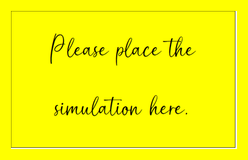

$x_{t-9} = 25$, $x_{t-8} = 4$, $x_{t-7} = 7$, $x_{t-6} = 1$, $x_{t-5} = 2$, $x_{t-4} = 23$, $x_{t-3} = 11$, $x_{t-2} = 14$, $x_{t-1} = 18$, $x_{t} = 19$PASTE INTO LESSON 4-1
Chapter 4: Lesson 1
Class Activity: Random Walks (15 min)
Definitions
Consider moving on a number line, where your movements are determined by a discrete white noise (DWN) process. Each successive value indicates how far you will move along the number line from your current position. This is mathematically equivalent to allowing your position at time \(t\) to be the sum of all the observed DWN values up to time \(t\).
Definition of a Random Walk
Let \(\{x_t\}\) be a time series. Then, \(\{x_t\}\) is a random walk if it can be expressed as \[ x_{t} = x_{t-1} + w_{t} \] where \(\{w_t\}\) is a white noise series.
There are other ways to represent this expression.
This process of back substitution is so common, we define notation to handle it.
Definition of the Backward Shift Operator
We define the backward shift operator or the lag operator, \(\mathbf{B}\), as: \[ \mathbf{B} x_t = x_{t-1} \] where \(\{x_t\}\) is any time series.
We can apply this operator repeatedly. We will use exponential notation to indicate this.
\[ \mathbf{B}^2 x_t = \mathbf{B} \mathbf{B} x_t = \mathbf{B} \left( \mathbf{B} x_t \right) x_t = \mathbf{B} x_{t-1} = \mathbf{B} x_{t-2} \]
In general, \[ \mathbf{B}^n x_t = \underbrace{\mathbf{B} \cdot \mathbf{B} \cdot \cdots \cdot \mathbf{B}}_{n ~ \text{terms}} x_t = \mathbf{B}^{n-1} \left( \mathbf{B} x_t \right) = \mathbf{B}^{n-1} \left( x_{t-1} \right) = \mathbf{B}^{n-2} \left( x_{t-2} \right) = \cdots = \mathbf{B} x_{t-(n-1)} = x_{t-n} \]
\(\ \)
In this class, we are learning to investigate different types of time series. Up to this point, we have focused mostly on time series with distinct seasonal behavior. We will not focus on what are called stochastic processes or random processes, where there is not necessarily a seasonal component. We first focus on white noise.
A time series \(\{w_t: t = 1, 2, \ldots, n\}\) is a discrete white noise (DWN) if the variables \(w_1, w_2, \ldots, w_n\) are independent and identically distributed with mean 0. The assumption that the variables are identically distributed implies that there is a common variance denoted \(\sigma\). The assumption of independence means that the covariance (and correlation) between different variables will be zero: \(\cov(w_i, w_j) = 0\) and \(\cor(w_i, w_j) = 0\) if \(i \ne j\).
If the variables are normally distributed, i.e. \(w_i \sim N(0,\sigma^2)\), the DWN is called a Gaussian white noise process. The normal distribution is also called the Gaussian distribution, after Carl Friedrich Gauss.
Simulation
The following simulation illustrates a white noise time series.

Visualizing White Noise
The data in the file white_noise.parquet were generated by a Gaussian white noise process.
# White noise data
white_noise_df <- rio::import("https://byuistats.github.io/timeseries/data/white_noise.parquet")The first 250 points in this time series are illustrated here:
Show the code
white_noise_df |>
mutate(t = 1:nrow(white_noise_df)) |>
head(250) |>
ggplot(aes(x = t, y = x)) +
geom_line() +
theme_bw() +
labs(
x = "Time",
y = "Values",
title = "First 250 Values of a Gaussian White Noise Time Series"
) +
theme(
plot.title = element_text(hjust = 0.5)
)
Here is a histogram of the 2500 values from this DWN distribution.
Show the code
white_noise_df |>
mutate(density = dnorm(x, mean(white_noise_df$x), sd(white_noise_df$x))) |>
ggplot(aes(x = x)) +
geom_histogram(aes(y = after_stat(density)),
color = "white", fill = "#56B4E9", binwidth = 1) +
geom_line(aes(x = x, y = density)) +
theme_bw() +
labs(
x = "Values",
y = "Frequency",
title = "Histogram of Values from a Gaussian White Noise Process"
) +
theme(
plot.title = element_text(hjust = 0.5)
)
Notice that the values follow a normal distribution. This suggests the data are from a Gaussian white noise distribution.
Second-Order Properties
When we refer to the second-order properties of a time series, we are talking about its variance and covariance. The mean is a first-order property, the covariance is a second-order property.
Second-Order Properties of a Discrete White Noise Process
If \(\{w_t\}_{t=1}^n\) is a DWN time series, then the population has the following properties.
\[ \mu_w = 0 \] and \[ cov(w_t, w_{t+k}) = \begin{cases} \sigma^2, & k = 0 \\ 0, & k \ne 0 \end{cases} \] The correlation function is therefore
\[ \rho_k = \begin{cases} 1, & k = 0 \\ 0, & k \ne 0 \end{cases} \]
Note that the properties given above are theoretical properties of the population, not estimates computed using a sample. The sample autocorrelations will not equal zero, due to randomness inherent in sampling.
In your introductory statistics course, you learned about Type I error.
Type I Errors
Suppse we will conduct a hypothesis test with a level of significance equal to \(\alpha = 0.05\). If the null hypothesis is true, due to sampling variation there is a probability of 0.05 that we will reject the null hypothesis…even though it is true. We refer to this as making a Type I Error.
When we create a correlogram, we actually conduct one hypothesis test for each value of \(k\). With so many hypothesis tests, it is not surprising if some of them show a significant correlation due to chance alone. In this case, we tend to disregard correlations that are barely significant and inexplicable.
Fitting the White Noise Model
Typically, a DWN series arises in the random component of another time series. If we have fully explained the level and seasonality in the time series, then the only component left is the random component, which would ideally follow a DWN process.
Since the mean of a DWN time series is zero, the only parameter we need to fit is the variance.